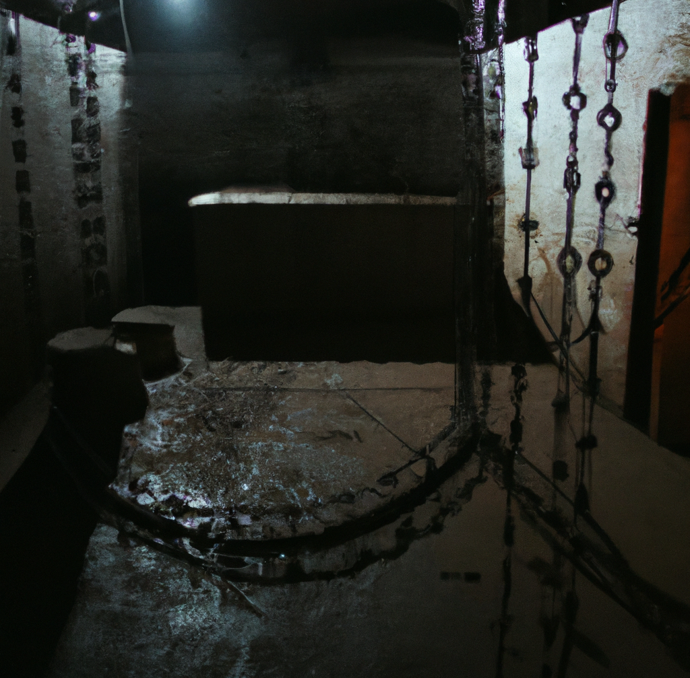

When I was a young, I was a cold, ruthless man, and I didn't care about the consequences of my actions. The only thing I cared about was completing my missions, getting my paycheck and staying alive. I worked for the russian KGB, the security agency of the Soviet Union.
In my job, I was required to do all sorts of things. Sometimes I had to beat people up, or kidnap them. Other times, I had to torture them, or poison them secretly. I was trained in all sorts of methods of interrogation, and I used them all to extract information from my victims.
There was one victim in particular that I remember vividly. I was tasked with extracting information from him, and at first, I tried using more traditional methods of interrogation. I asked him questions, trying to get him to talk. But he was stubborn, and he refused to cooperate. So I had to get more creative.
I began using various methods of torture on him, trying to break him down. I used waterboarding, electric shocks, and then sleep deprivation. But despite all of my efforts, the man still refused to talk. He was a tough one, and I had to admire his strength and his determination. But I couldn't let that stop me. I had a job to do, and I was going to do it no matter what.
And so I did. I kept torturing him, this time with more... invasive methods. First I started with his toenails, then I threaten to take his eyes. I tortured him day after day, making sure he doesn't pass out in the process, trying to break him down. And finally, after weeks of this, he cracked He told me everything I wanted to know, and then some more.
Working for the KGB was a tough job. We were constantly under pressure to get results, and there was little room for error. We were expected to be ruthless and efficient, and we were given all the tools we needed to get the job done.
The people I worked with were a mixed bunch. Some of them were true believers, convinced that we were doing the right thing. Others were just in it for the power and the money. And then there were the ones like me, who were just trying to survive.
And me... I didn't feel any remorse at all at that time. I knew that what I was doing was wrong, but I simply didn't care. I was a soldier, following orders, and I didn't think twice about the people I was hurting.
But now, as I look back on my life, I see things differently. I can't escape the memories of all the horrible things I've done. I see the faces of the people I've hurt, and I feel their pain. And I know that I can't undo the things I've done, no matter how much I wish I could.
Those are the thoughts I will be dying with. I am an old man now and my sad thoughts are all I have left.